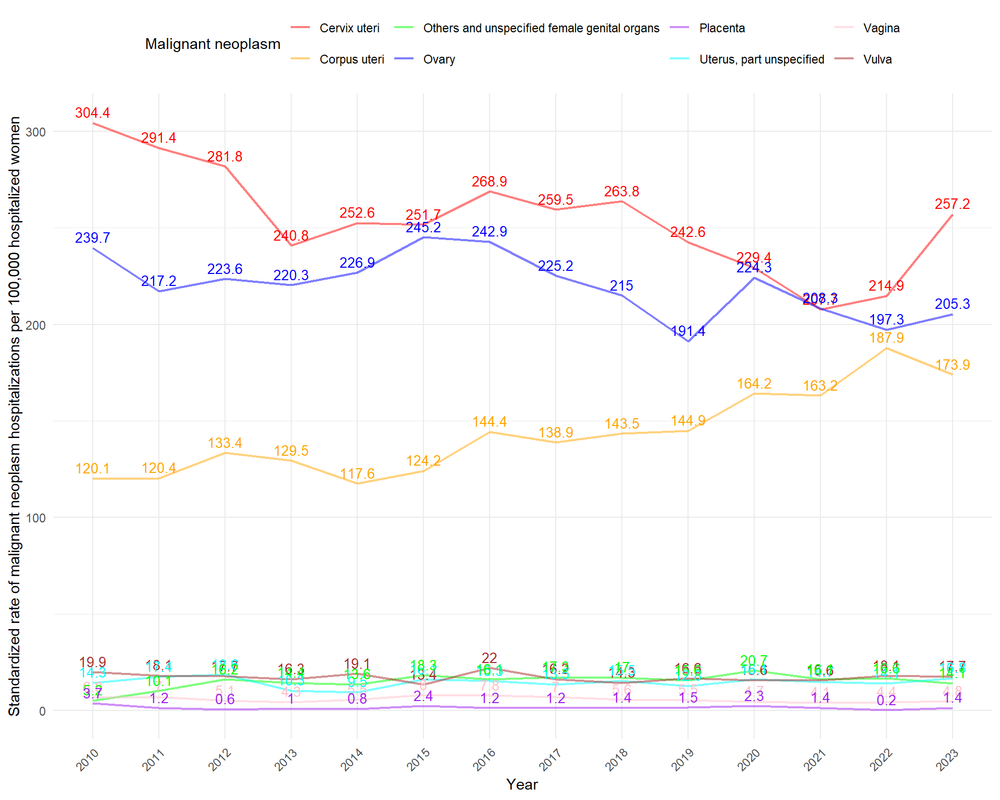
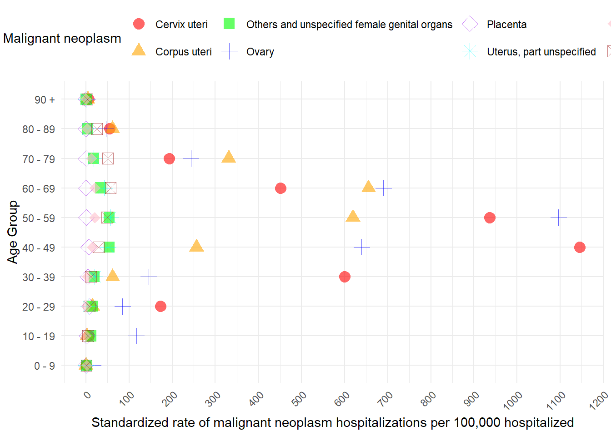

Malignant neoplasms of female genital organs C51-C58 in Chile from 2010 to 2023
María Elisa Joannon Ovalle
Amaru Simón Agüero Jiménez ![]()
1 Introduction.
2 Methodology
2.1 R packages.
Code
install_and_load <- function(package) {
if (!require(package, character.only = TRUE)) {
utils::install.packages(package)
library(package, character.only = TRUE)
}
}
# List of packages to be installed and loaded
packages <- c("devtools", "renv", "tidyverse", "janitor", "data.table", "flexsurv",
"kableExtra", "reticulate", "FactoMineR", "factoextra", "knitr","plotly","censo2017", "ggbreak", "patchwork","latex2exp","chilemapas")
# Apply the function to each package
invisible(capture.output(sapply(packages, install_and_load)))
opts_chunk$set(
warning = FALSE,
message = FALSE
)
rm(list = ls())2.2 Data Adminstration
Code
# Define the path for the HOSP.rds file
output_file <- paste0(gsub("docs", "", getwd()), "data/data_output/HOSP.rds")
# Check if the file already exists
if (!file.exists(output_file)) {
# If the file doesn't exist, execute the code
# Get the list of CSV files in the "data/EGRESOS" folder
files <- list.files(path = paste0(gsub("docs", "", getwd()), "data/EGRESOS/"), pattern = "\\.csv$", full.names = TRUE)
# Define the columns you need to select, considering potential variations in the column names
required_columns <- c("SEXO", "GRUPO_EDAD", "ETNIA",
"GLOSA_PAIS_ORIGEN", "COMUNA_RESIDENCIA", "GLOSA_COMUNA_RESIDENCIA",
"REGION_RESIDENCIA", "GLOSA_REGION_RESIDENCIA", "PREVISION", "GLOSA_PREVISION",
"ANO_EGRESO", "DIAG1", "DIAG2", "DIAS_ESTADA", "CONDICION_EGRESO")
# Function to read each file and select the required columns
read_file <- function(file) {
# Read the data, assuming the delimiter is a semicolon (you can change it if necessary)
data <- read_delim(file, delim = ";")
# Select the necessary columns (handling cases where the column name is slightly different)
data_selected <- data %>%
select(any_of(required_columns))
return(data_selected)
}
# Load all datasets and name them according to the file name (without extension)
data_list <- lapply(files, read_file)
# Assign names to the list elements using the file names without the extension
names(data_list) <- tools::file_path_sans_ext(basename(files))
# Combine all datasets into one
HOSP <- bind_rows(data_list) %>%
filter(SEXO != "*")
# Save the combined dataset as an RDS file
saveRDS(HOSP, file = output_file)
} else {
# If the file exists, load it
HOSP <- readRDS(output_file)
}
HOSP <- HOSP %>%
mutate(across(where(is.character), ~ iconv(., from = "latin1", to = "UTF-8"))) %>% # Convert all character columns to UTF-8
mutate(
GRUPO_EDAD = as.character(GRUPO_EDAD), # Ensure GRUPO_EDAD is character
GRUPO_EDAD = recode(GRUPO_EDAD,
`menor de un año` = "0 - 9",
`1 a 9` = "0 - 9"), # Recode the age groups
GRUPO_EDAD = gsub(" a ", " - ", GRUPO_EDAD),
GRUPO_EDAD = gsub(" y más", " +", GRUPO_EDAD),# Replace "a" with "-"
GRUPO_EDAD = as.factor(GRUPO_EDAD) # Convert back to factor if needed
)Code
# Define the path for the CENSO2017.rds file
output_file_censo <- paste0(gsub("docs", "", getwd()), "data/data_output/CENSO2017.rds")
# Check if the file already exists
if (!file.exists(output_file_censo)) {
# If the file doesn't exist, download, process, and save the data
# Connect and download census data
censo_conectar()
censo_descargar()
# Select relevant columns and mutate data
CENSO2017 <- censo_tabla("personas")[,c(1,5,6)]
CENSO2017 <- CENSO2017 %>%
mutate(p09 = replace(p09, p09 %in% c(132, 131), NA)) %>%
mutate(p08 = replace(p08, p08 %in% c(3, 0), NA)) %>%
mutate(SEXO = factor(p08, levels = c(1, 2), labels = c("HOMBRE", "MUJER"))) %>%
mutate(GRUPO_EDAD = cut(p09,
breaks = c(-Inf, 9, 19, 29, 39, 49, 59, 69, 79, 89, Inf),
labels = c("0 - 9", "10 - 19", "20 - 29", "30 - 39", "40 - 49",
"50 - 59", "60 - 69", "70 - 79", "80 - 89", "90 +"),
right = FALSE))
# Save the processed dataset as an RDS file
saveRDS(CENSO2017, file = output_file_censo)
} else {
# If the file exists, load it
CENSO2017 <- readRDS(output_file_censo)
}
STDPOPULATION <- CENSO2017 %>%
filter(SEXO=="MUJER") %>%
group_by(GRUPO_EDAD) %>%
summarise(n = n(), .groups = 'drop') %>%
mutate(MUJER_STD = n*100000/sum(n))2.3 Hospitalization Rates of Malignant neoplasms of female genital organs C51-C58 ICD chapter standardized by age group.
2.3.1 Direct standardization rates (DSR) and standardized rates ratio (SRR).
Code
#NATIONAL#######################################################################
HOSP_C51_C58 <- HOSP %>%
filter(grepl("^C5[1-8]", DIAG1)) %>%
mutate(DIAG1 = substr(DIAG1, 1, 3)) %>%
group_by(ANO_EGRESO, GRUPO_EDAD, DIAG1) %>%
summarise(n = n(), .groups = 'drop') %>%
drop_na(DIAG1) %>%
complete(ANO_EGRESO, GRUPO_EDAD, DIAG1 = c("C51", "C52", "C53", "C54", "C55", "C56", "C57", "C58"),
fill = list(n = 0)) %>%
mutate(across(everything(), ~na_if(., NA) %>% replace_na(0))) %>%
mutate(ANO_EGRESO = as.character(ANO_EGRESO))
TOTALS_HOSP_C51_C58 <- HOSP %>%
filter(SEXO == "MUJER") %>%
group_by(GRUPO_EDAD, ANO_EGRESO) %>%
summarise(
total_MUJER = n()
)
HOSP_C51_C58_RATES <- HOSP_C51_C58 %>%
left_join(TOTALS_HOSP_C51_C58, by = c("GRUPO_EDAD","ANO_EGRESO")) %>%
left_join(STDPOPULATION[,c(1,3)], by = "GRUPO_EDAD") %>%
mutate(
rates = (n / total_MUJER),
) %>%
mutate(
DSR_female = MUJER_STD*rates
)
HOSP_C51_C58_DSR <- HOSP_C51_C58_RATES %>%
group_by(ANO_EGRESO,DIAG1) %>%
summarise(DSR_HOSP = sum(DSR_female),
.groups = 'drop')
icd10_mapping <- c(
"C51" = "Vulva",
"C52" = "Vagina",
"C53" = "Cervix uteri",
"C54" = "Corpus uteri",
"C55" = "Uterus, part unspecified",
"C56" = "Ovary",
"C57" = "Others and unspecified female genital organs",
"C58" = "Placenta"
)
#REGIONAL#######################################################################
HOSP_C51_C58_REG <- HOSP %>%
filter(grepl("^C5[1-8]", DIAG1)) %>%
mutate(DIAG1 = substr(DIAG1, 1, 3)) %>%
group_by(ANO_EGRESO, GLOSA_REGION_RESIDENCIA, GRUPO_EDAD, DIAG1) %>%
summarise(n = n(), .groups = 'drop') %>%
drop_na(DIAG1) %>%
complete(ANO_EGRESO, GLOSA_REGION_RESIDENCIA, GRUPO_EDAD, DIAG1 = c("C51", "C52", "C53", "C54", "C55", "C56", "C57", "C58"),
fill = list(n = 0)) %>%
mutate(across(everything(), ~na_if(., NA) %>% replace_na(0))) %>%
mutate(ANO_EGRESO = as.character(ANO_EGRESO))
HOSP_C51_C58_REG_RATES_TOTAL <- HOSP %>%
filter(grepl("^C5[1-8]", DIAG1)) %>%
mutate(DIAG1 = substr(DIAG1, 1, 3)) %>%
group_by(GLOSA_REGION_RESIDENCIA, GRUPO_EDAD, DIAG1) %>%
summarise(n = n(), .groups = 'drop') %>%
drop_na(DIAG1) %>%
complete(GLOSA_REGION_RESIDENCIA, GRUPO_EDAD, DIAG1 = c("C51", "C52", "C53", "C54", "C55", "C56", "C57", "C58"),
fill = list(n = 0)) %>%
mutate(across(everything(), ~na_if(., NA) %>% replace_na(0))) %>%
mutate(ANO_EGRESO = "Total")
HOSP_C51_C58_REG <- bind_rows(HOSP_C51_C58_REG, HOSP_C51_C58_REG_RATES_TOTAL)
TOTALS_HOSP_C51_C58_REG <- HOSP %>%
filter(SEXO == "MUJER") %>%
group_by(GRUPO_EDAD, GLOSA_REGION_RESIDENCIA, ANO_EGRESO) %>%
summarise(
total_MUJER = n()
)
TOTALS_HOSP_C51_C58_REG_TOTAL <- HOSP %>%
filter(SEXO == "MUJER") %>%
group_by(GRUPO_EDAD, GLOSA_REGION_RESIDENCIA) %>%
summarise(
total_MUJER = n()
) %>%
mutate(ANO_EGRESO = "Total")
TOTALS_HOSP_C51_C58_REG <- bind_rows(TOTALS_HOSP_C51_C58_REG , TOTALS_HOSP_C51_C58_REG_TOTAL)
HOSP_C51_C58_RATES_REG <- HOSP_C51_C58_REG %>%
left_join(TOTALS_HOSP_C51_C58_REG, by = c("GRUPO_EDAD","ANO_EGRESO","GLOSA_REGION_RESIDENCIA")) %>%
left_join(STDPOPULATION[,c(1,3)], by = "GRUPO_EDAD") %>%
mutate(
rates = (n / total_MUJER),
) %>%
mutate(
DSR_female = MUJER_STD*rates
) %>%
filter(!GLOSA_REGION_RESIDENCIA %in% c("Ignorada", "Extranjero"))
HOSP_C51_C58_DSR_REG <- HOSP_C51_C58_RATES_REG %>%
group_by(ANO_EGRESO, GLOSA_REGION_RESIDENCIA, DIAG1) %>%
summarise(DSR_HOSP = sum(DSR_female),
.groups = 'drop') %>%
filter(!GLOSA_REGION_RESIDENCIA %in% c("Ignorada", "Extranjero"))
#REGIONAL TOTAL C5##############################################################
HOSP_C5_REG <- HOSP %>%
filter(grepl("^C5[1-8]", DIAG1)) %>%
mutate(DIAG1 = substr(DIAG1, 1, 3)) %>%
group_by(ANO_EGRESO, GLOSA_REGION_RESIDENCIA, GRUPO_EDAD) %>%
summarise(n = n(), .groups = 'drop') %>%
complete(ANO_EGRESO, GLOSA_REGION_RESIDENCIA, GRUPO_EDAD,
fill = list(n = 0)) %>%
mutate(across(everything(), ~na_if(., NA) %>% replace_na(0))) %>%
mutate(ANO_EGRESO = as.character(ANO_EGRESO))
HOSP_C5_REG_RATES_TOTAL <- HOSP %>%
filter(grepl("^C5[1-8]", DIAG1)) %>%
mutate(DIAG1 = substr(DIAG1, 1, 3)) %>%
group_by(GLOSA_REGION_RESIDENCIA, GRUPO_EDAD) %>%
summarise(n = n(), .groups = 'drop') %>%
complete(GLOSA_REGION_RESIDENCIA, GRUPO_EDAD,
fill = list(n = 0)) %>%
mutate(across(everything(), ~na_if(., NA) %>% replace_na(0))) %>%
mutate(ANO_EGRESO = "Total")
HOSP_C5_REG <- bind_rows(HOSP_C5_REG, HOSP_C5_REG_RATES_TOTAL)
TOTALS_HOSP_C5_REG <- HOSP %>%
filter(SEXO == "MUJER") %>%
group_by(GRUPO_EDAD, GLOSA_REGION_RESIDENCIA, ANO_EGRESO) %>%
summarise(
total_MUJER = n()
)
TOTALS_HOSP_C5_REG_TOTAL <- HOSP %>%
filter(SEXO == "MUJER") %>%
group_by(GRUPO_EDAD, GLOSA_REGION_RESIDENCIA) %>%
summarise(
total_MUJER = n()
) %>%
mutate(ANO_EGRESO = "Total")
TOTALS_HOSP_C5_REG <- bind_rows(TOTALS_HOSP_C5_REG , TOTALS_HOSP_C5_REG_TOTAL)
HOSP_C5_RATES_REG <- HOSP_C5_REG %>%
left_join(TOTALS_HOSP_C5_REG, by = c("GRUPO_EDAD","ANO_EGRESO","GLOSA_REGION_RESIDENCIA")) %>%
left_join(STDPOPULATION[,c(1,3)], by = "GRUPO_EDAD") %>%
mutate(
rates = (n / total_MUJER),
) %>%
mutate(
DSR_female = MUJER_STD*rates
) %>%
filter(!GLOSA_REGION_RESIDENCIA %in% c("Ignorada", "Extranjero"))
HOSP_C5_DSR_REG <- HOSP_C5_RATES_REG %>%
group_by(ANO_EGRESO, GLOSA_REGION_RESIDENCIA) %>%
summarise(DSR_HOSP = sum(DSR_female),
.groups = 'drop') %>%
filter(!GLOSA_REGION_RESIDENCIA %in% c("Ignorada", "Extranjero"))
################################################################################
# Recode the DIAG1 column using the mapping
HOSP_C51_C58_RATES <- HOSP_C51_C58_RATES %>%
mutate(DIAG1_full = recode(DIAG1, !!!icd10_mapping)) # Create a new column with full names
HOSP_C51_C58_DSR <- HOSP_C51_C58_DSR %>%
mutate(DIAG1_full = recode(DIAG1, !!!icd10_mapping))
# Recode the DIAG1 column using the mapping
HOSP_C51_C58_RATES_REG <- HOSP_C51_C58_RATES_REG %>%
mutate(DIAG1_full = recode(DIAG1, !!!icd10_mapping)) # Create a new column with full names
HOSP_C51_C58_DSR_REG <- HOSP_C51_C58_DSR_REG %>%
mutate(DIAG1_full = recode(DIAG1, !!!icd10_mapping))3 Results
Code
ggplot(HOSP_C51_C58_DSR, aes(x = as.factor(ANO_EGRESO), y = DSR_HOSP, color = DIAG1_full , group = DIAG1_full)) +
geom_line(size = 0.8, alpha = 0.5) +
geom_text(aes(label = round(DSR_HOSP, 1)), vjust = -0.5, size = 3.5, show.legend = FALSE) + # Añadir etiquetas de valores
labs(x = "Year",
y = "Standardized rate of malignant neoplasm hospitalizations per 100,000 hospitalized women",
color = "Malignant neoplasm") +
theme_minimal() +
theme(
plot.title = element_text(hjust = 0.5, size = 16),
axis.text.x = element_text(angle = 45, hjust = 1),
legend.position = "top"
)
Code
ggsave("fig1.png", dpi = 1200, width = 10, height = 8)Code
HOSP_C51_C58_RATES %>%
group_by(GRUPO_EDAD, DIAG1_full) %>%
summarise(
DSR_female = sum(DSR_female)
) %>%
ggplot(aes(x = GRUPO_EDAD, y = DSR_female, shape = DIAG1_full, color = DIAG1_full)) +
geom_point(size = 4, alpha = 0.6) + # Enlarged points with transparency
theme(axis.text.x = element_text(angle = 90, hjust = 1)) +
labs(
x = "Age Group",
y = "Standardized rate of malignant neoplasm hospitalizations per 100,000 hospitalized women",
color = "Malignant neoplasm",
shape = "Malignant neoplasm"
) +
theme_minimal() +
theme(
plot.title = element_text(hjust = 0.5, size = 16),
axis.text.x = element_text(angle = 45, hjust = 1),
legend.position = "top"
) +
scale_x_discrete(limits = levels(HOSP_C51_C58_RATES$GRUPO_EDAD)) +
scale_y_continuous(breaks = seq(0, 1500, by = 100)) +# Reverse order of age groups
coord_flip() + # Flip the x and y axes
scale_shape_manual(values = c(
"Cervix uteri" = 16, # Circle
"Corpus uteri" = 17, # Triangle up
"Other and unspecified female genital organs" = 15, # Square
"Ovary" = 3, # Plus
"Placenta" = 5, # Cross
"Uterus, part unspecified" = 8, # Star
"Vagina" = 18, # Diamond
"Vulva" = 7 # Triangle down
))
Code
ggsave("fig2.png", dpi = 1200, width = 10, height = 8)Code
# Define the order of the regions from north to south
region_order <- c(
"De Arica y Parinacota",
"De Tarapacá",
"De Antofagasta",
"De Atacama",
"De Coquimbo",
"De Valparaíso",
"Metropolitana de Santiago",
"Del Libertador B. O'Higgins",
"Del Maule",
"Del Bíobío",
"De Ñuble",
"De La Araucanía",
"De Los Ríos",
"De Los Lagos",
"De Aisén del Gral. C. Ibáñez del Campo",
"De Magallanes y de La Antártica Chilena"
)
# Apply the order to the GLOSA_REGION_RESIDENCIA column
HOSP_C51_C58_DSR_REG <- HOSP_C51_C58_DSR_REG %>%
mutate(GLOSA_REGION_RESIDENCIA = factor(GLOSA_REGION_RESIDENCIA, levels = region_order))
# Plot
HOSP_C51_C58_DSR_REG %>%
filter(ANO_EGRESO == "Total") %>%
ggplot(aes(x = GLOSA_REGION_RESIDENCIA, y = DSR_HOSP, shape = DIAG1_full, color = DIAG1_full)) +
geom_point(size = 4, alpha = 0.6) + # Enlarged points with transparency
theme(axis.text.x = element_text(angle = 90, hjust = 1)) +
labs(
x = "Region",
y = "Standardized rate of malignant neoplasm hospitalizations per 100,000 hospitalized women",
color = "Malignant neoplasm",
shape = "Malignant neoplasm"
) +
theme_minimal() +
theme(
plot.title = element_text(hjust = 0.5, size = 16),
axis.text.x = element_text(angle = 45, hjust = 1),
legend.position = "top"
) +
scale_x_discrete(limits = rev(region_order)) + # Use the custom region order
scale_y_continuous(breaks = seq(0, 1500, by = 100)) +
coord_flip() + # Flip the x and y axes
scale_shape_manual(values = c(
"Cervix uteri" = 16, # Circle
"Corpus uteri" = 17, # Triangle up
"Other and unspecified female genital organs" = 15, # Square
"Ovary" = 3, # Plus
"Placenta" = 5, # Cross
"Uterus, part unspecified" = 8, # Star
"Vagina" = 18, # Diamond
"Vulva" = 7 # Triangle down
))Code
ggsave("fig3.png", dpi = 1200, width = 10, height = 8)Code
# Load the regional map of Chile from chilemapas
chile_regions <- generar_regiones(mapa = chilemapas::mapa_comunas) %>%
mutate(
region_name = recode(codigo_region,
"01" = "De Tarapacá",
"02" = "De Antofagasta",
"03" = "De Atacama",
"04" = "De Coquimbo",
"05" = "De Valparaíso",
"06" = "Del Libertador B. O'Higgins",
"07" = "Del Maule",
"08" = "Del Bíobío",
"09" = "De La Araucanía",
"10" = "De Los Lagos",
"11" = "De Aisén del Gral. C. Ibáñez del Campo",
"12" = "De Magallanes y de La Antártica Chilena",
"13" = "Metropolitana de Santiago",
"14" = "De Los Ríos",
"15" = "De Arica y Parinacota",
"16" = "De Ñuble"
)
)
HOSP_C5_DSR_REG %>%
filter(ANO_EGRESO == "Total") %>%
left_join(chile_regions, by = c("GLOSA_REGION_RESIDENCIA" = "region_name")) %>%
mutate(centroid = st_centroid(geometry)) %>% # Compute centroids of each region
ggplot() +
geom_sf(aes(fill = DSR_HOSP, geometry = geometry), color = "white", size = 0.3) + # Add color boundaries for regions
# Add arrows (segments) pointing from the region centroid to the label (on the left)
geom_segment(aes(x = st_coordinates(centroid)[, 1],
y = st_coordinates(centroid)[, 2],
xend = st_coordinates(centroid)[, 1] - 2, # Move label to the left (-2)
yend = st_coordinates(centroid)[, 2]),
color = "turquoise4", size = 0.5, arrow = arrow(length = unit(0.1, "inches"))) +
# Add region labels to the left of the regions
geom_text(aes(label = GLOSA_REGION_RESIDENCIA,
x = st_coordinates(centroid)[, 1] - 2, # Position labels to the left of the regions
y = st_coordinates(centroid)[, 2]),
size = 3, color = "purple4", hjust = 1) + # Align the labels to the right of the line (hjust=1)
scale_fill_viridis_c(option = "D", alpha = 0.8, name = "Standardized rate of malignant neoplasm\nhospitalizations per 100,000") + # Use transparent plasma color
labs(x = NULL, y = NULL) + # Remove x and y axis labels
theme_minimal(base_size = 13) +
theme(
axis.text = element_blank(), # Remove axis text
axis.ticks = element_blank(), # Remove axis ticks
panel.grid = element_blank(), # Remove grid lines
plot.title = element_text(hjust = 0.5),
legend.position = "right"
) +
coord_sf(xlim = c(-90, -65), ylim = c(-55, -15)) # Adjust limits to focus on Chile's long range
Code
ggsave("fig4.png", dpi = 1200, width = 10, height = 16)